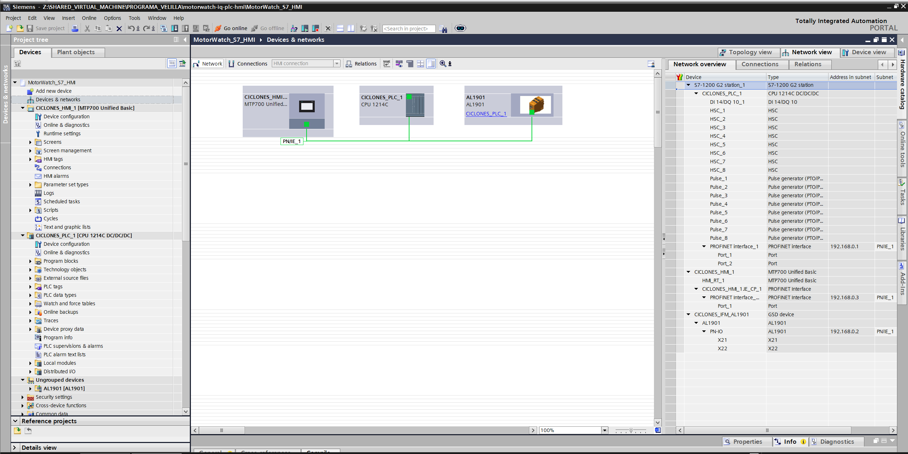
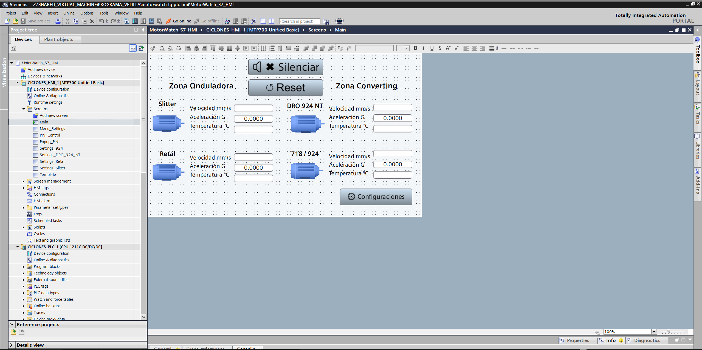
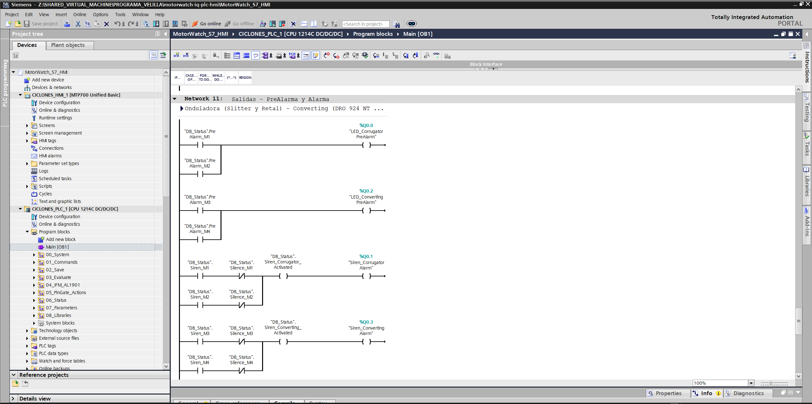
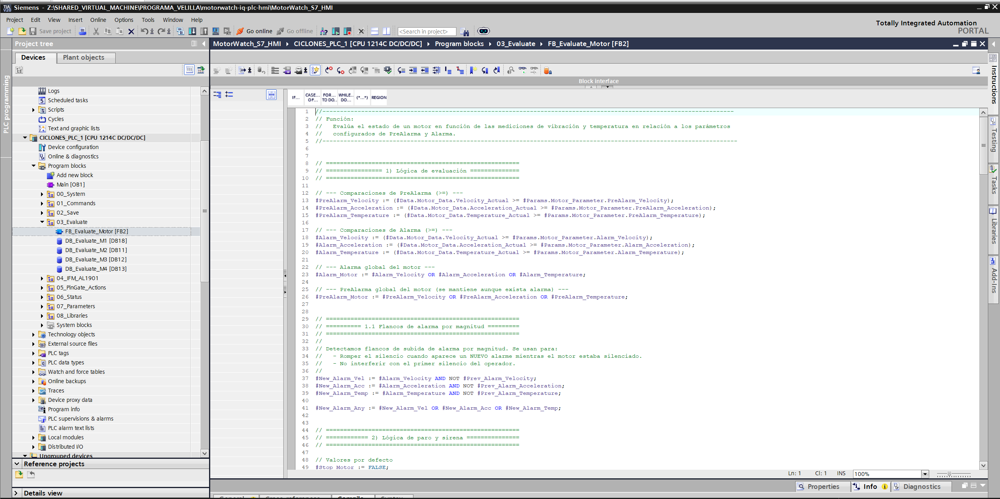
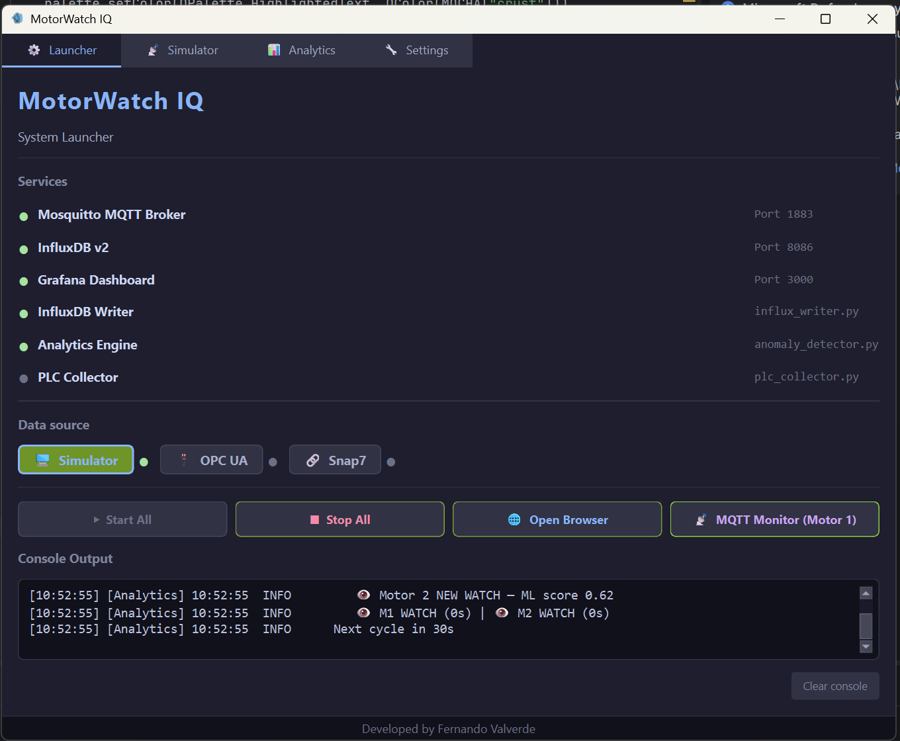
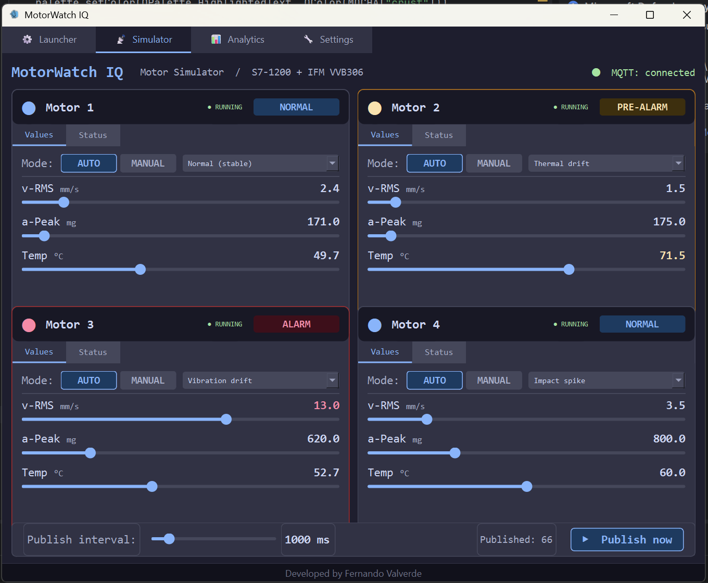
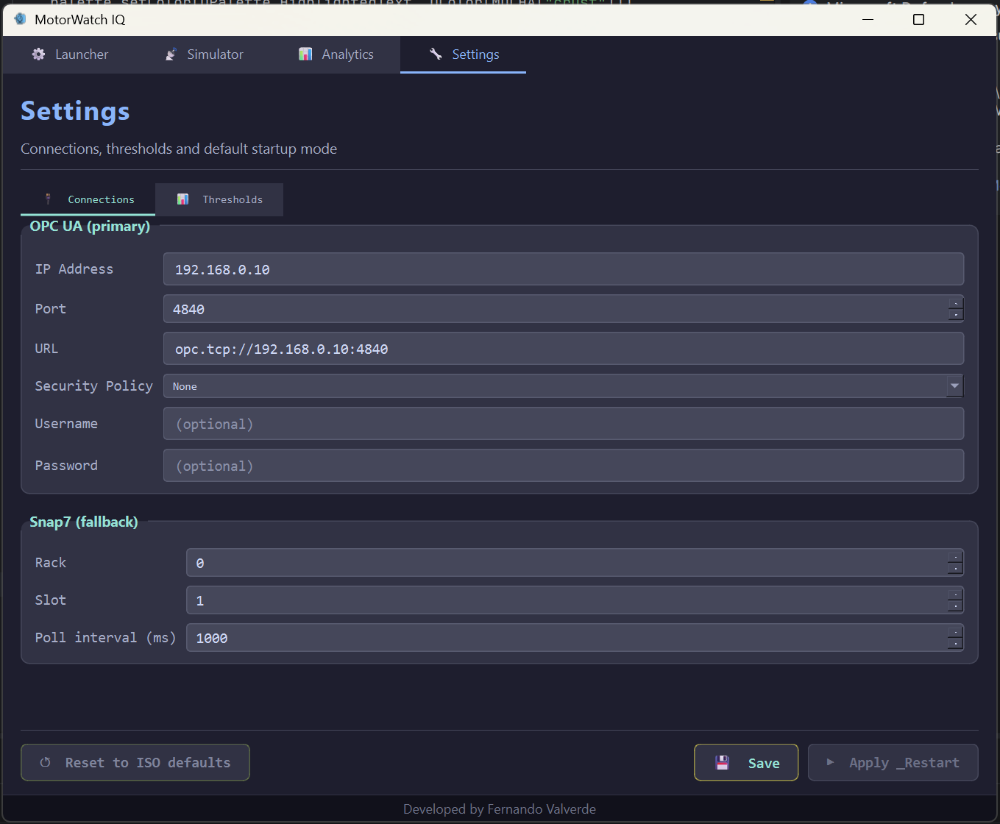
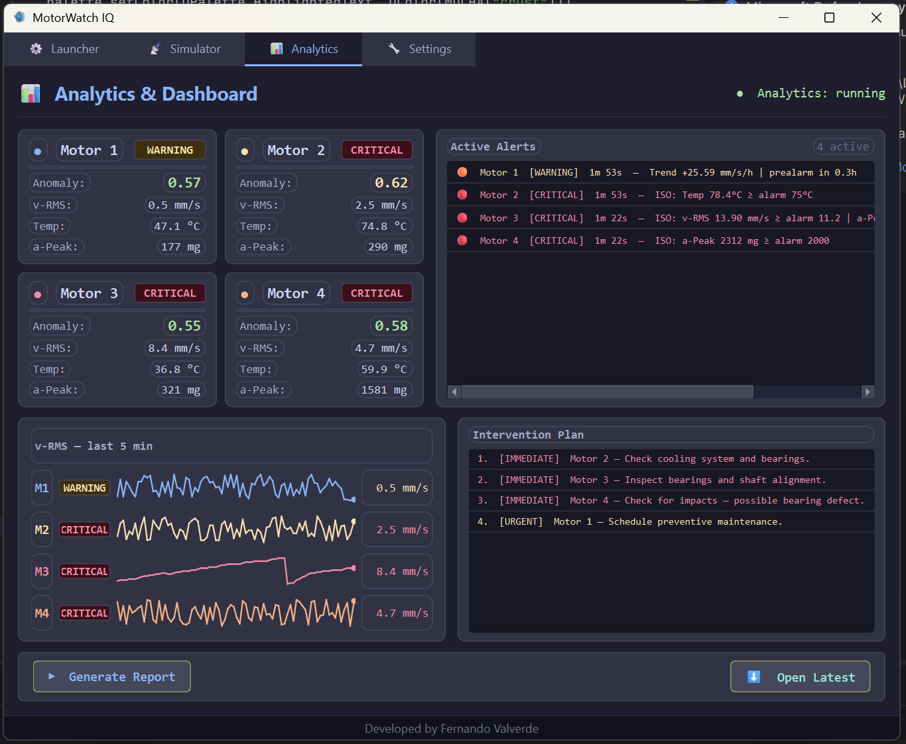
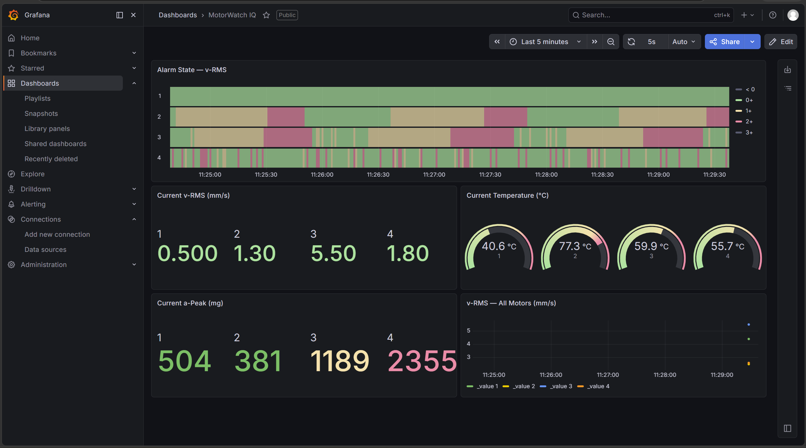
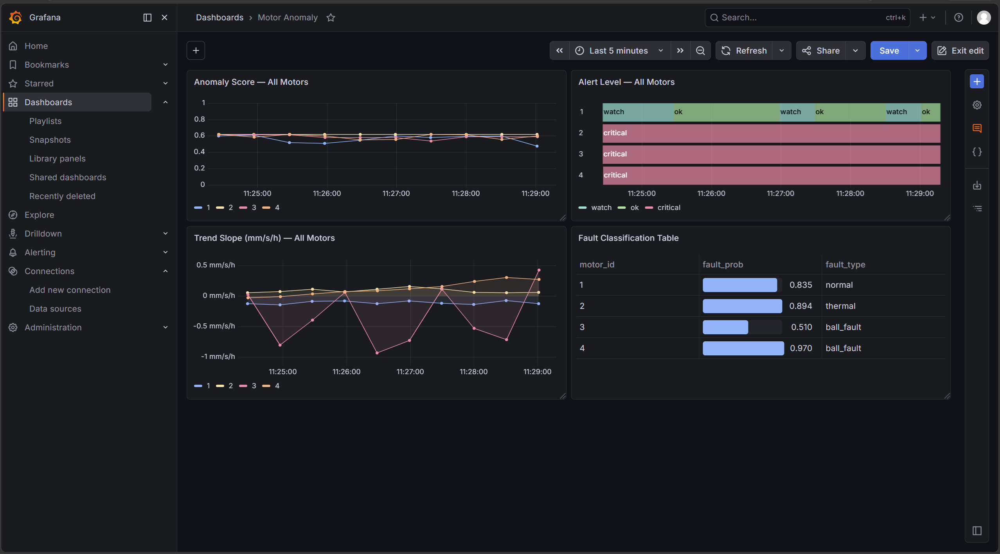

Industrial IoT · Predictive Maintenance · Industry 4.0
MotorWatch IQ
End-to-end motor condition monitoring — from IFM VVB306 vibration sensors on a Siemens S7-1200 PLC to machine-learning anomaly detection, Grafana dashboards, and bilingual maintenance reports.
The monitoring stack runs on a production-grade Siemens S7-1200 (CPU 1214C DC/DC/DC) connected to four IFM VVB306 IO-Link vibration and temperature sensors via an AL1901 IO-Link master. The HMI is a Siemens MTP700 Unified Basic, all networked over PROFINET.

Devices & Networks — PROFINET topology
MTP700 Unified · CPU 1214C · AL1901 IO-Link master at 192.168.0.1–3

HMI MTP700 — main screen
4-motor overview: velocity mm/s, acceleration G, temperature °C per zone

Main OB1 — alarm output ladder
Pre-alarm LEDs and zone sirens driven by DB_Status per motor, with silence logic

FB_Evaluate_Motor — SCL function block
Evaluates vibration, acceleration and temperature against configurable pre-alarm and alarm thresholds per motor
FB_Save_Parameters — write-on-change state machine
SCL state machine: Idle → Saving → Saved. Copies HMI edit DB to retentive parameter DB on operator Save command
PLC
Siemens S7-1200 CPU 1214C DC/DC/DC
HMI
Siemens MTP700 Unified Basic
IO-Link Master
IFM AL1901 PROFINET GSD device
Sensors (×4)
IFM VVB306 Vibration + Temperature IO-Link
Network
PROFINET 192.168.0.x subnet
Programming
TIA Portal V20 Ladder + SCL + FBD
02 · Simulator
PySide6 desktop application
A full PySide6 desktop application manages the entire stack — MQTT broker, InfluxDB writer, analytics engine, and PLC collector — as supervised subprocesses. The simulator generates realistic sensor data for all four motors with configurable fault scenarios, enabling full testing without physical hardware.

Launcher tabService orchestration with live status dots. Simulator / OPC UA / Snap7 data source selection.

Simulator tab4 motor cards with AUTO/MANUAL mode, configurable fault scenarios: normal, thermal drift, vibration drift, impact spike.

Settings tab — connectionsOPC UA primary (IEC 62541) at opc.tcp://192.168.0.10:4840, Snap7 fallback. ISO 20816-3 threshold presets.

Analytics tabLive anomaly scores, v-RMS sparklines per motor, active alert list, and prioritised intervention plan.
03 · Communication
IIoT data pipeline
OPC UA (IEC 62541) was chosen as the primary PLC interface for its native support on S7-1200 firmware ≥ 4.1 and its status as the Industry 4.0 standard for interoperability. Snap7 provides a fallback for environments without OPC UA enabled. All sensor data flows through MQTT to InfluxDB for time-series storage.
S7-1200
IFM VVB306 × 4
→
OPC UA
IEC 62541 · Port 4840
→
plc_collector.py
asyncua · Snap7 fallback
→
Mosquitto
MQTT · Port 1883
→
influx_writer.py
MQTT → InfluxDB
→
InfluxDB v2
bucket: motors
Primary protocol
OPC UA IEC 62541 · asyncua lib
Fallback protocol
Snap7 Direct S7 comms
Message broker
Mosquitto MQTT 3.1.1 · Port 1883
Time-series DB
InfluxDB 2.7.12 Flux query language
Reconnection
Exponential backoff Up to 60 s ceiling
Payload
JSON over MQTT v-RMS · a-Peak · Temp · status
04 · Analytics
Grafana dashboards & reports
Two Grafana dashboards provide real-time and historical visibility. The sensor dashboard shows alarm state timelines, current readings, and v-RMS trends. The anomaly dashboard visualises ML scores, alert levels, trend slopes, and fault classification per motor.

Sensor dashboardAlarm state timeline, current v-RMS and a-Peak stats, temperature gauges, v-RMS time series — 5s auto-refresh.

Motor Anomaly dashboardIsolation Forest anomaly scores, alert level state timeline, trend slope (mm/s/h), and CWRU-based fault classification table.
Maintenance report — live output
Auto-generated HTML report — bilingual EN/ES, Catppuccin Mocha theme, ISO 20816-3 thresholds. Toggle language inline.
05 · Intelligence
Machine learning pipeline
The analytics engine combines unsupervised anomaly detection (Isolation Forest) with trend analysis and CWRU-dataset fault classification. It runs as a persistent process reading from InfluxDB, writing scores and fault types back to the motor_anomaly measurement every 30 seconds.
01
Data ingestion
Reads v-RMS, a-Peak, temperature windows from InfluxDB Flux queries over configurable time ranges.
02
Isolation Forest
Unsupervised anomaly scoring (0.0–1.0) trained on CWRU bearing dataset. No labelled fault data required.
03
Trend analysis
Linear regression on v-RMS time windows. Outputs slope (mm/s/h) and ETA to pre-alarm and alarm thresholds.
Threshold logic: OK → WATCH → WARNING → CRITICAL. Hysteresis prevents alert flapping. Windows notification on CRITICAL.
06
Report generation
Bilingual HTML report (EN/ES) with executive summary, intervention plan, and alert history. Auto-generated on schedule.
Anomaly scores — Isolation Forest outputScores 0.0–1.0 across all 4 motors with WATCH/WARNING/CRITICAL thresholds. Fault classification: thermal (M2), ball_fault (M3, M4).
Live analytics in the PySide6 UIReal-time anomaly scores, v-RMS sparklines, active alerts, and prioritised intervention plan updated every 30 seconds.
06 · About
Fernando Valverde
Industrial automation and electronics engineer with 20+ years of experience in the technology field, developing hardware and software solutions for diverse clients across various market segments. Expertise includes PLCs, HMIs, VFDs, Python (RPA, desktop applications, Django, Flask, Pandas, etc.), and component-level electronics repair and development. Currently building IoT and Industry 4.0 solutions, bridging the gap between factory-floor hardware and modern data infrastructure.
Siemens TIA Portal
Python / PySide6
OPC UA / MQTT / IIoT
InfluxDB / Grafana
scikit-learn / ML
Electronics repair
VFDs / Servo drives
MotorWatch IQ was built end-to-end across structured development sessions — from hardware wiring and PLC programming to machine learning model training and portfolio presentation. Every layer was designed, coded, and tested by one engineer.